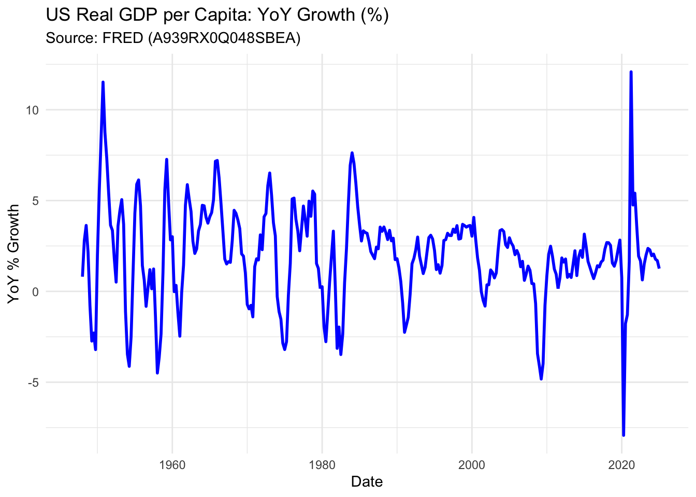
macro_workbook
Simply the workbook for everything
Introduction
Productivity Growth
Fred version
Maddison Project version
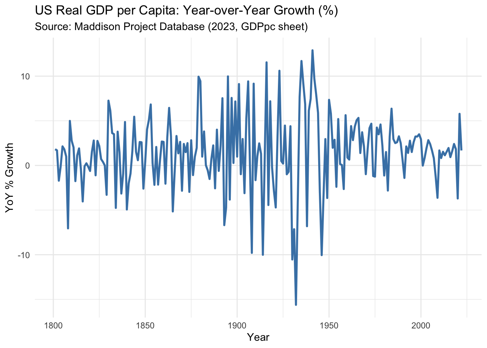
Supplement: Real GPD per capita (actual figures)
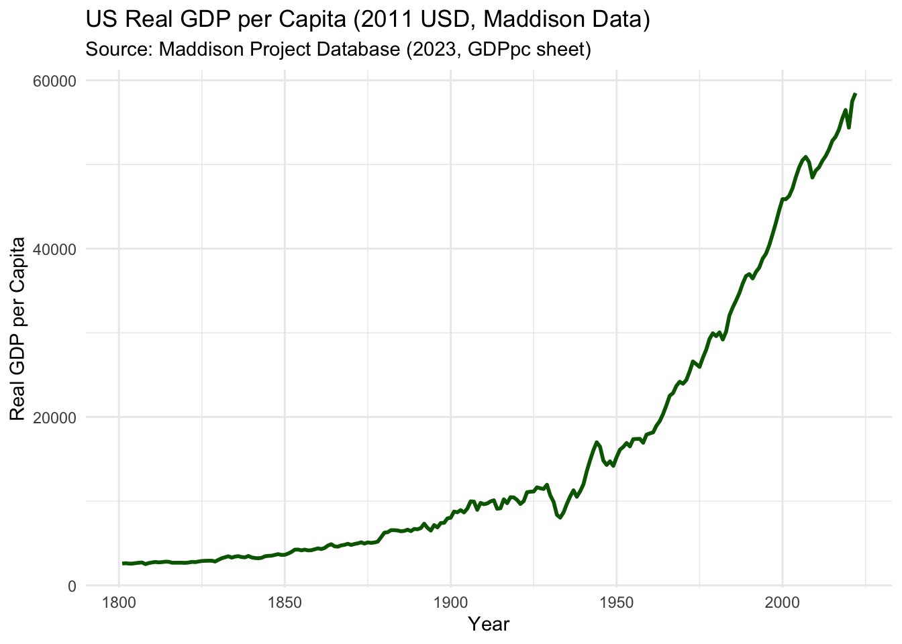
Short-Term Debt Cycle
Credit Growth
Total Credit to Private Sector
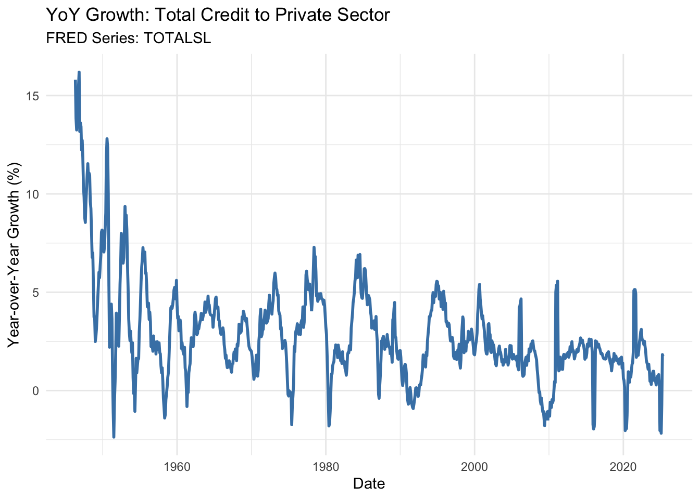
Raw level
Code
# Plot level of Total Credit to Private Sector
ggplot(total_credit, aes(x = date, y = value)) +
geom_line(color = "steelblue", size = 1) +
labs(
title = "Total Credit to Private Non-Financial Sector (Level)",
subtitle = "FRED Series: TOTALSL",
x = "Date", y = "Billions of USD"
) +
theme_minimal()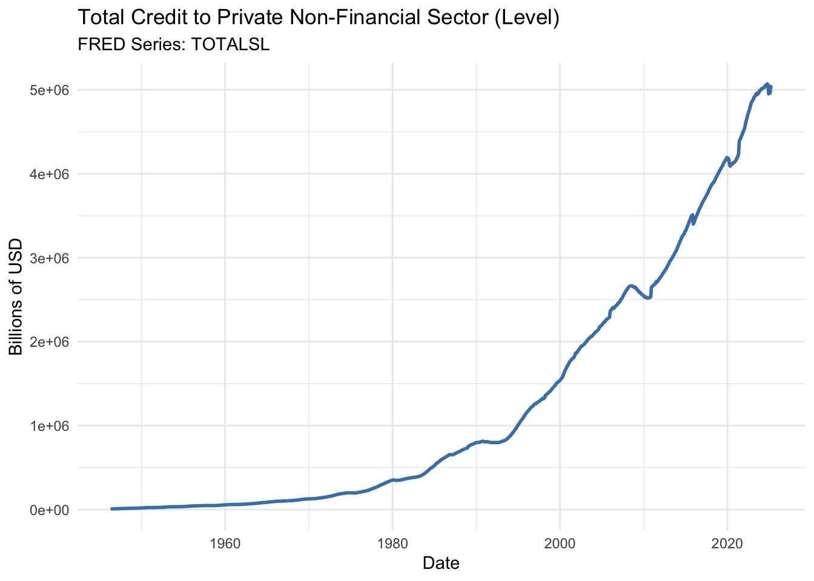
Household Credit
Code
# Household Credit (Consumer Credit Outstanding)
household_credit <- fredr(
series_id = "HCCSDODNS",
observation_start = as.Date("1946-01-01")
)
household_credit <- household_credit %>%
mutate(
yoy_growth = (value / lag(value, 4) - 1) * 100
) %>%
filter(!is.na(yoy_growth))
# Plot
ggplot(household_credit, aes(x = date, y = yoy_growth)) +
geom_line(color = "darkred", size = 1) +
labs(
title = "YoY Growth: Household Credit",
subtitle = "FRED Series: HCCSDODNS",
x = "Date", y = "Year-over-Year Growth (%)"
) +
theme_minimal()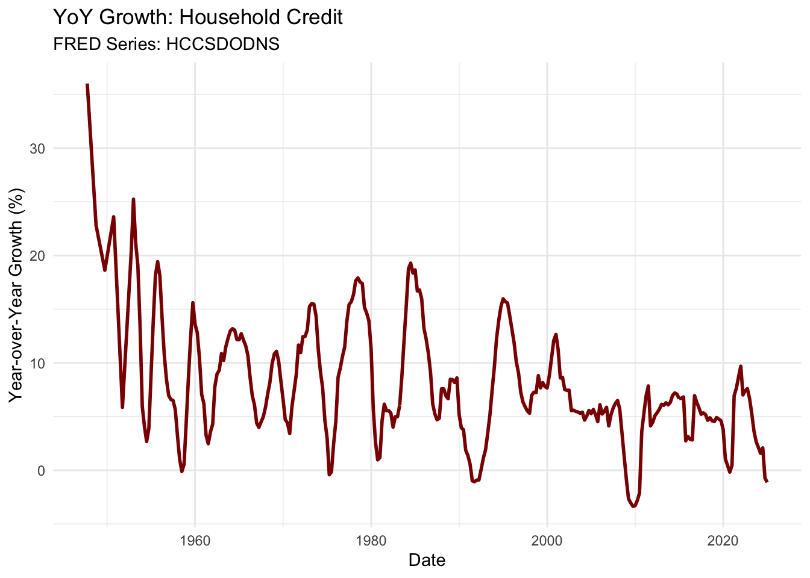
Raw level
Code
# Plot level of Household Credit
ggplot(household_credit, aes(x = date, y = value)) +
geom_line(color = "darkred", size = 1) +
labs(
title = "Household Credit Outstanding (Level)",
subtitle = "FRED Series: HCCSDODNS",
x = "Date", y = "Billions of USD"
) +
theme_minimal()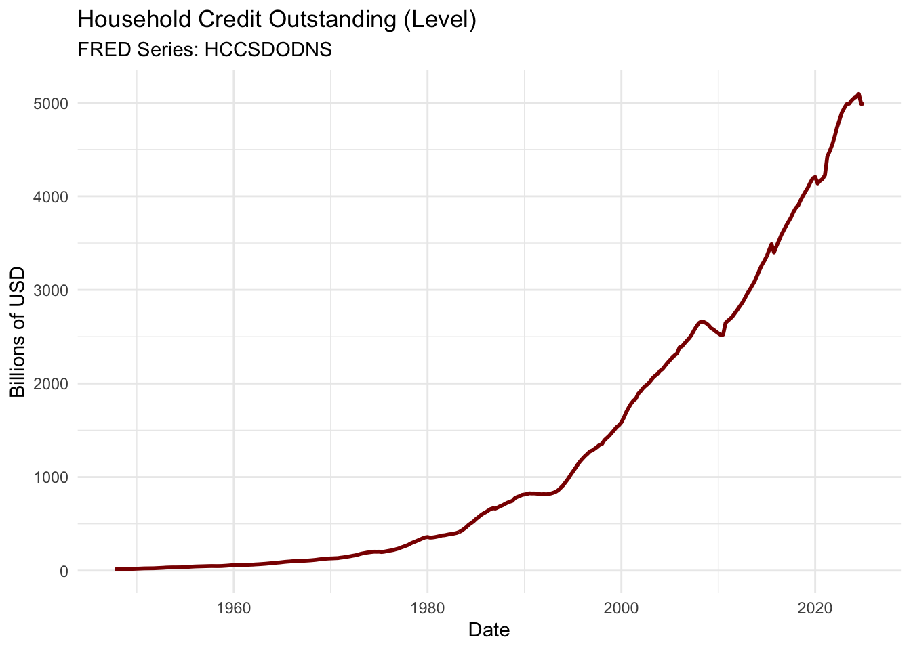
Nonfinancial corporate debt
Code
# Nonfinancial Corporate Credit
corporate_credit <- fredr(
series_id = "BCNSDODNS",
observation_start = as.Date("1946-01-01")
)
corporate_credit <- corporate_credit %>%
mutate(
yoy_growth = (value / lag(value, 4) - 1) * 100
) %>%
filter(!is.na(yoy_growth))
# Plot
ggplot(corporate_credit, aes(x = date, y = yoy_growth)) +
geom_line(color = "darkgreen", size = 1) +
labs(
title = "YoY Growth: Nonfinancial Corporate Credit",
subtitle = "FRED Series: BCNSDODNS",
x = "Date", y = "Year-over-Year Growth (%)"
) +
theme_minimal()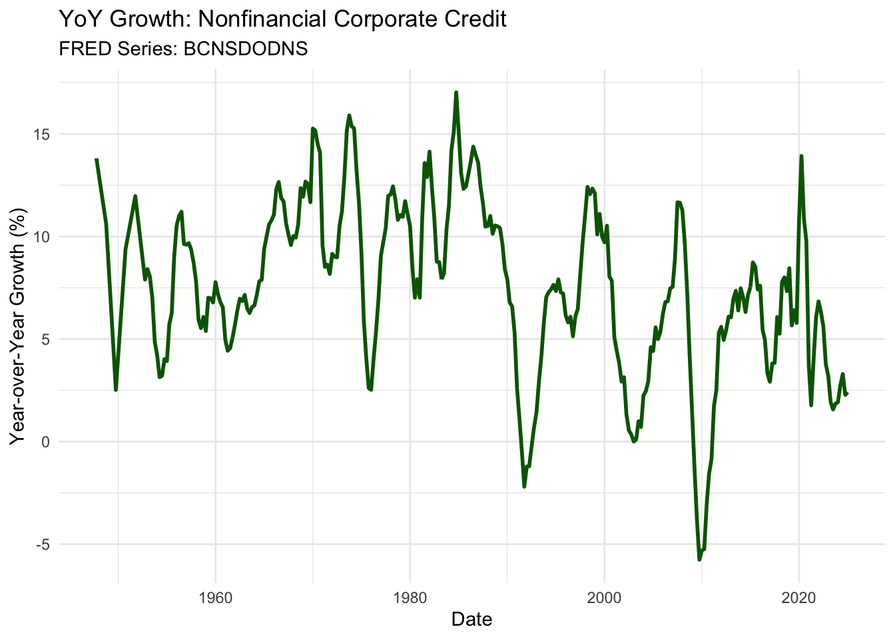
Raw level
Code
# Plot level of Nonfinancial Corporate Debt
ggplot(corporate_credit, aes(x = date, y = value)) +
geom_line(color = "darkgreen", size = 1) +
labs(
title = "Nonfinancial Corporate Debt Outstanding (Level)",
subtitle = "FRED Series: BCNSDODNS",
x = "Date", y = "Billions of USD"
) +
theme_minimal()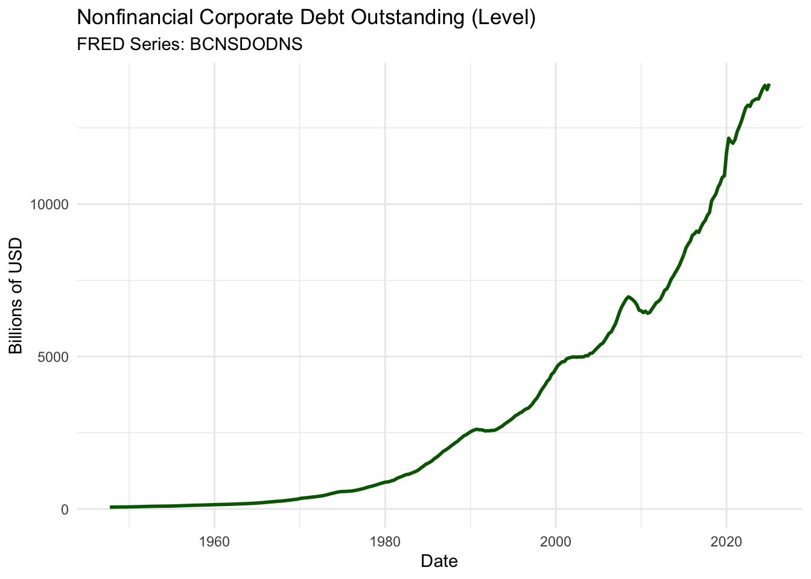
Total Credit Market Debt/Nominal GDP
Code
# Get Total Credit Market Debt Owed
tcmdo <- fredr(
series_id = "TCMDO",
observation_start = as.Date("1945-01-01")
)
# Get Nominal GDP
nom_gdp <- fredr(
series_id = "GDP",
observation_start = as.Date("1945-01-01")
)
# Join & Calculate Debt-to-GDP Ratio
debt_gdp <- tcmdo %>%
select(date, debt = value) %>%
inner_join(
nom_gdp %>% select(date, gdp = value),
by = "date"
) %>%
mutate(
debt_to_gdp = (debt / gdp) * 100
)
# Plot
ggplot(debt_gdp, aes(x = date, y = debt_to_gdp)) +
geom_line(color = "purple", size = 1) +
labs(
title = "Private Sector Debt to GDP Ratio",
subtitle = "TCMDO / GDP",
x = "Date", y = "Debt-to-GDP (%)"
) +
theme_minimal()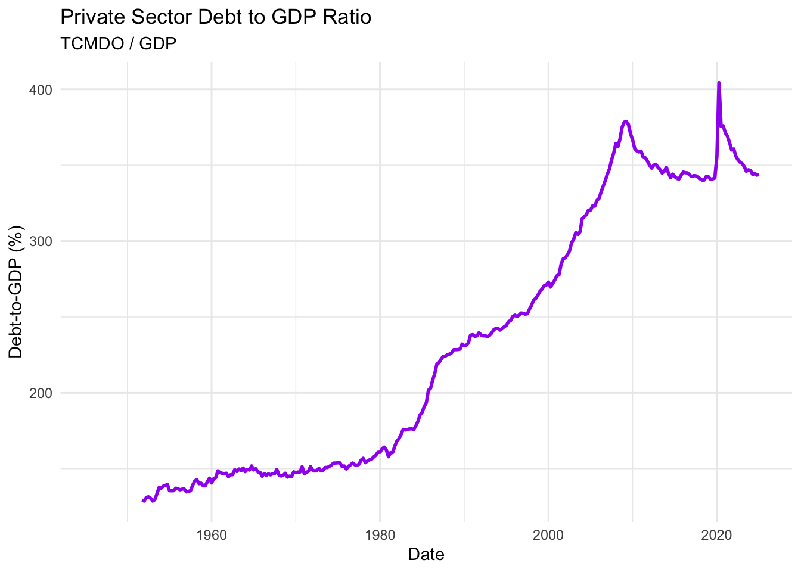
Nominal gdp raw level
Code
# Plot level of Nominal GDP
ggplot(nom_gdp, aes(x = date, y = value)) +
geom_line(color = "dodgerblue4", size = 1) +
labs(
title = "US Nominal GDP (Level)",
subtitle = "FRED Series: GDP",
x = "Date", y = "Billions of USD (Nominal)"
) +
theme_minimal()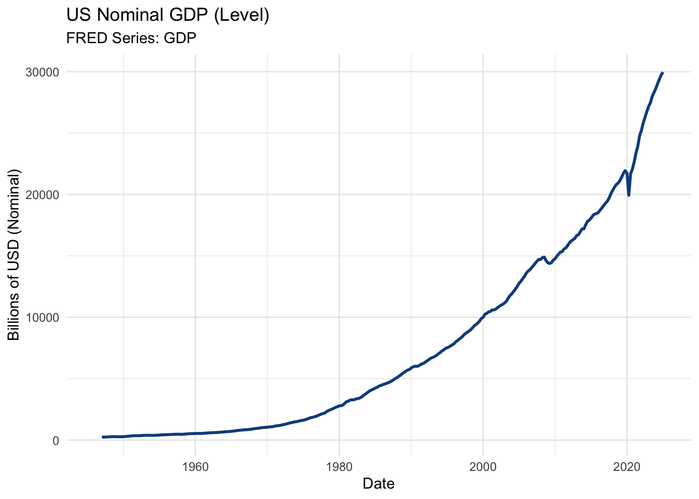
Total Credit Market Debt Outstanding raw level
Code
# Plot level of Total Credit Market Debt
ggplot(tcmdo, aes(x = date, y = value)) +
geom_line(color = "orchid4", size = 1) +
labs(
title = "Total Credit Market Debt Outstanding (Level)",
subtitle = "FRED Series: TCMDO",
x = "Date", y = "Billions of USD"
) +
theme_minimal()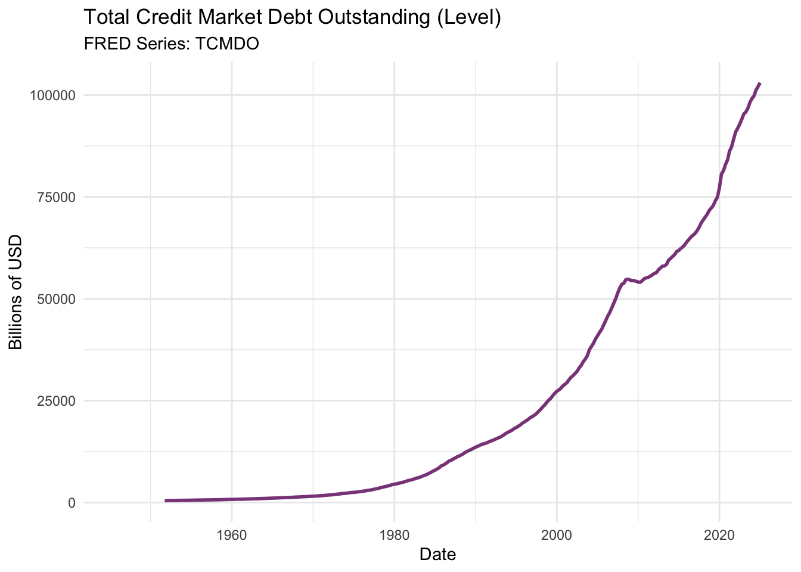
PMI
Need to work on this part
Yield Curve
Code
# Load 10y–2y yield spread
yield_curve <- fredr(
series_id = "T10Y2Y",
observation_start = as.Date("1976-01-01")
)
# Plot the yield curve
ggplot(yield_curve, aes(x = date, y = value)) +
geom_line(color = "darkred", size = 1) +
geom_hline(yintercept = 0, linetype = "dashed", color = "gray40") +
labs(
title = "10-Year Minus 2-Year Treasury Yield Spread",
subtitle = "Source: FRED (T10Y2Y)",
x = "Date", y = "Yield Spread (%)"
) +
theme_minimal()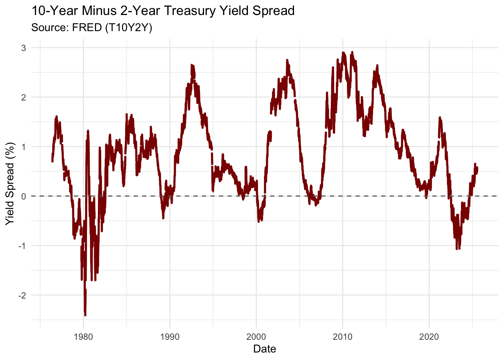
2yr and 10yr Raw level
Code
# Load both yield series
yield_10y <- fredr(
series_id = "GS10",
observation_start = as.Date("1976-06-01") # align with GS2 start date
)
yield_2y <- fredr(
series_id = "GS2",
observation_start = as.Date("1976-06-01")
)
# Combine into one data frame
library(dplyr)
yield_combined <- bind_rows(
yield_10y %>% mutate(term = "10-Year"),
yield_2y %>% mutate(term = "2-Year")
)
# Plot both lines
ggplot(yield_combined, aes(x = date, y = value, color = term)) +
geom_line(size = 1) +
labs(
title = "2-Year vs. 10-Year U.S. Treasury Yields",
subtitle = "FRED Series: GS2 and GS10 (Constant Maturity Rates)",
x = "Date", y = "Yield (%)",
color = "Maturity"
) +
theme_minimal()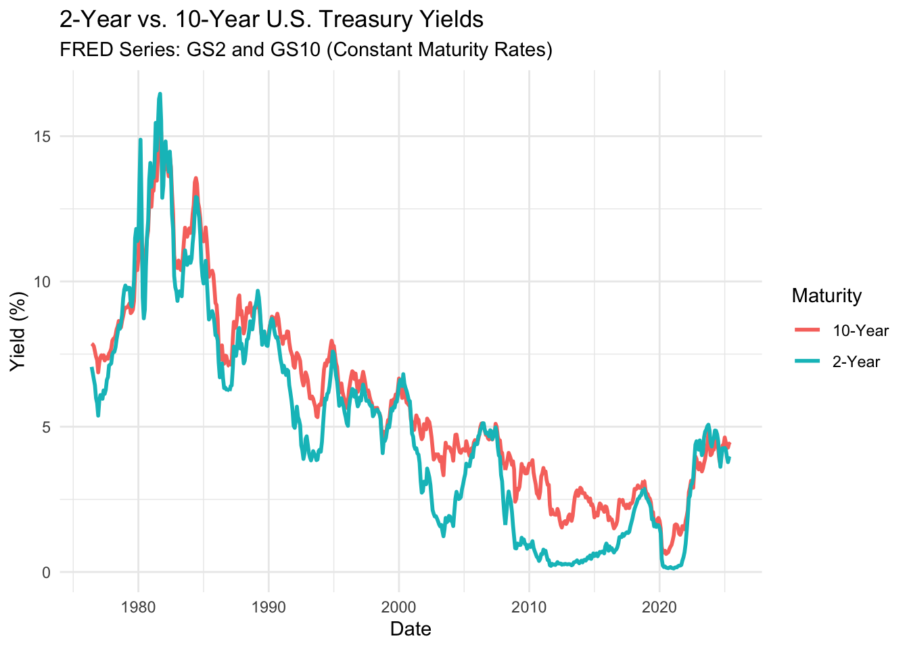
Unemployment
U-3 Unemployment (most basic)
Code
# Unemployment Rate (U‑3)
unrate <- fredr(
series_id = "UNRATE",
observation_start = as.Date("1948-01-01")
)
ggplot(unrate, aes(x = date, y = value)) +
geom_line(color = "steelblue", size = 1) +
labs(
title = "U‑3 Unemployment Rate",
subtitle = "FRED Series: UNRATE",
x = "Date", y = "Percent"
) +
theme_minimal()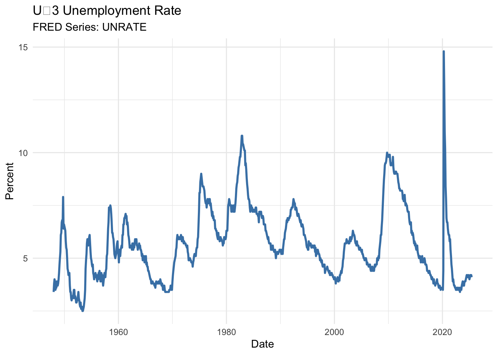
Labor-force participation
Code
# Labor‑Force Participation Rate
lf_part <- fredr(
series_id = "CIVPART",
observation_start = as.Date("1948-01-01")
)
ggplot(lf_part, aes(x = date, y = value)) +
geom_line(color = "darkgreen", size = 1) +
labs(
title = "Labor‑Force Participation Rate",
subtitle = "FRED Series: CIVPART",
x = "Date", y = "Percent"
) +
theme_minimal()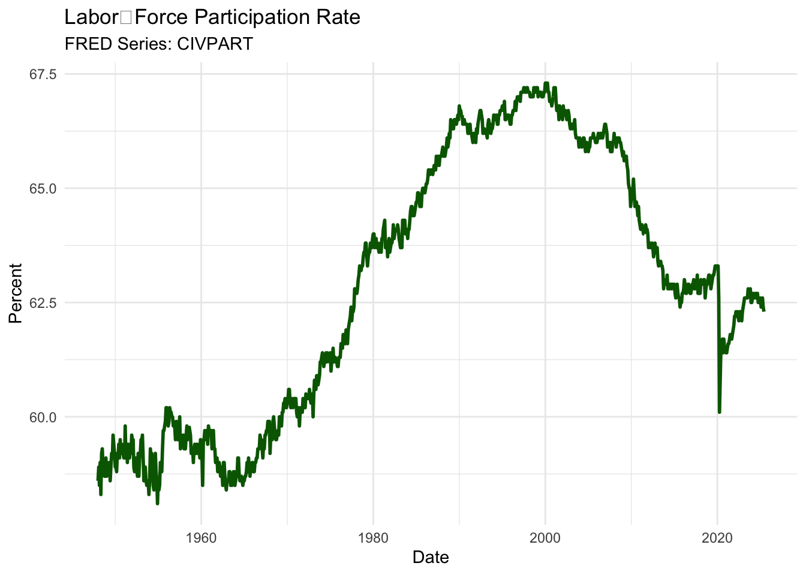
Employment-population ratio
Code
# Employment‑to‑Population Ratio
emp_ratio <- fredr(
series_id = "EMRATIO",
observation_start = as.Date("1948-01-01")
)
ggplot(emp_ratio, aes(x = date, y = value)) +
geom_line(color = "purple", size = 1) +
labs(
title = "Employment‑Population Ratio",
subtitle = "FRED Series: EMRATIO",
x = "Date", y = "Percent"
) +
theme_minimal()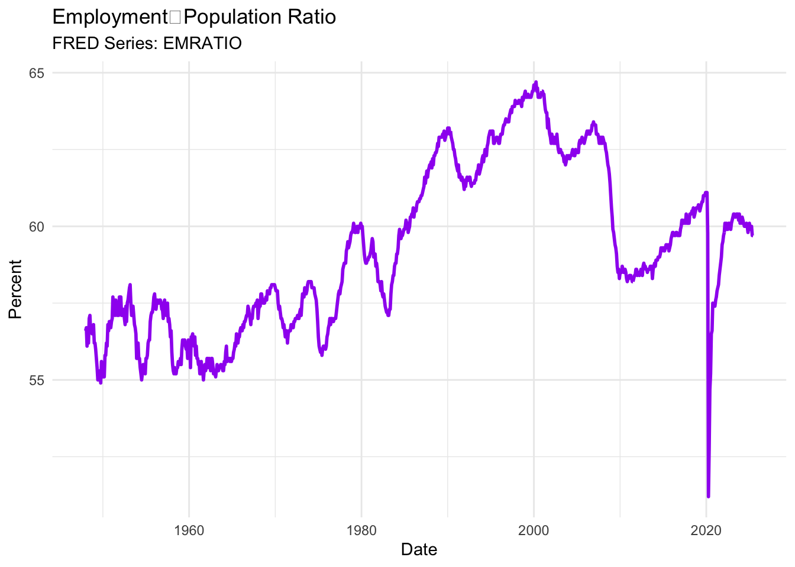
Broad Unemployment (U‑6)
Code
# U‑6 Unemployment Rate (broader measure)
u6rate <- fredr(
series_id = "U6RATE",
observation_start = as.Date("1994-01-01") # first year available
)
ggplot(u6rate, aes(x = date, y = value)) +
geom_line(color = "firebrick", size = 1) +
labs(
title = "U‑6 Unemployment Rate",
subtitle = "FRED Series: U6RATE",
x = "Date", y = "Percent"
) +
theme_minimal()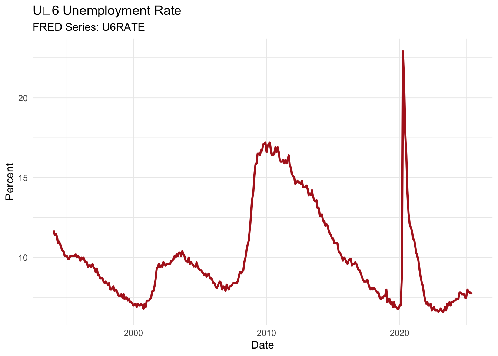
Long-term debt cycle
Leverage Metrics
Total public debt/GDP
Code
public_debt_gdp <- fredr(
series_id = "GFDEGDQ188S",
observation_start = as.Date("1966-01-01")
)
ggplot(public_debt_gdp, aes(x = date, y = value)) +
geom_line(color = "darkblue", size = 1) +
labs(
title = "Total Public Debt as % of GDP",
subtitle = "FRED Series: GFDEGDQ188S",
x = "Date", y = "Percent of GDP"
) +
theme_minimal()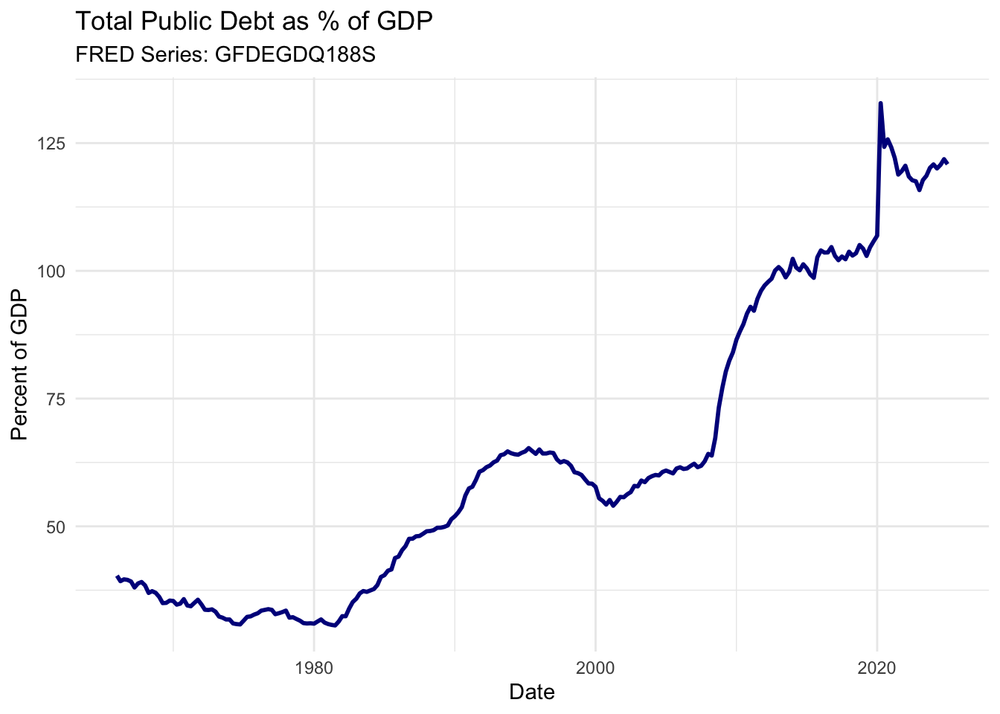
Household debt/GDP
Total public debt/Nominal GDP
Total nonfinancial corporate debt/Nominal GDP (broad)
Total credit to private nonfinancial sector/Nominal GDP
Loans and Leases in Bank Credit
Gov Fiscal Condition
Federal debt held by public
Code
# Federal Debt Held by Public
fed_debt_public <- fredr(
series_id = "FYGFDPUN",
observation_start = as.Date("1940-01-01")
)
ggplot(fed_debt_public, aes(x = date, y = value)) +
geom_line(color = "darkred", size = 1) +
labs(title = "Federal Debt Held by Public",
y = "Billions USD", x = "Date") +
theme_minimal()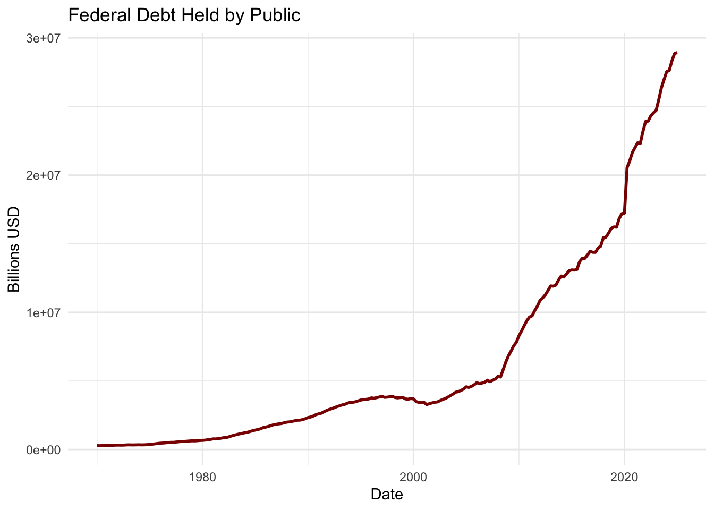
Federal Government Budget Deficit
Code
# Federal Budget Deficit
fed_budget_deficit <- fredr(
series_id = "MTSDS133FMS",
observation_start = as.Date("1950-01-01")
)
ggplot(fed_budget_deficit, aes(x = date, y = value)) +
geom_line(color = "navy", size = 1) +
labs(title = "Federal Government Budget Deficit",
y = "Millions USD", x = "Date") +
theme_minimal()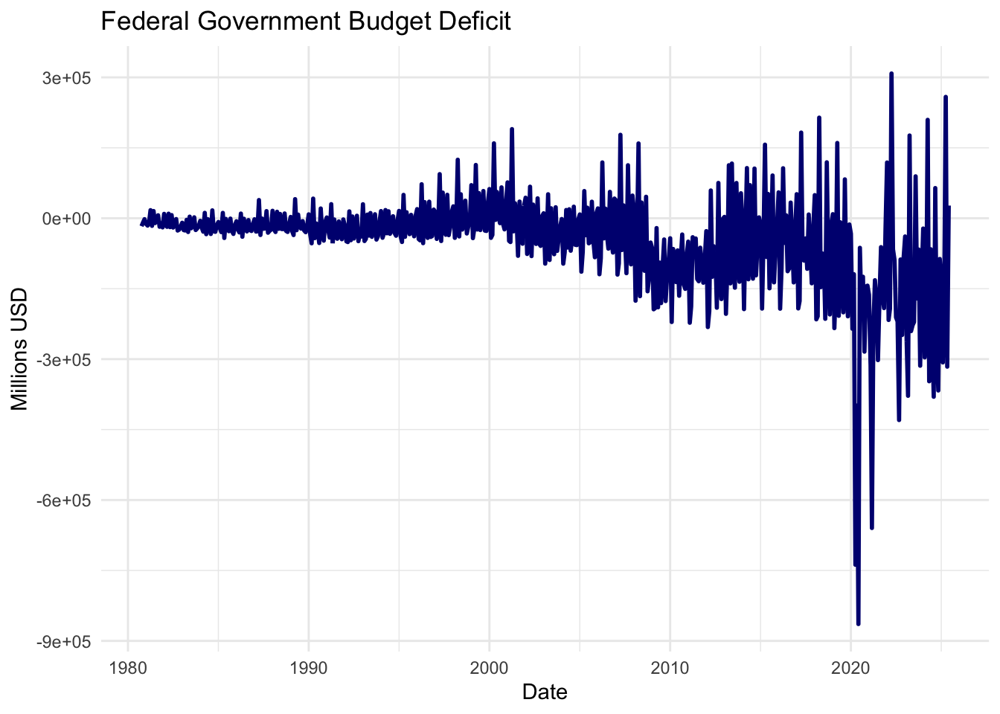
Federal Receipts as Percent of Gross Domestic Product
Code
# Federal Receipts as % of GDP
fed_receipts <- fredr(
series_id = "FYFRGDA188S",
observation_start = as.Date("1929-01-01")
)
ggplot(fed_receipts, aes(x = date, y = value)) +
geom_line(color = "darkgreen", size = 1) +
labs(title = "Federal Receipts (% of GDP)",
y = "% of GDP", x = "Date") +
theme_minimal()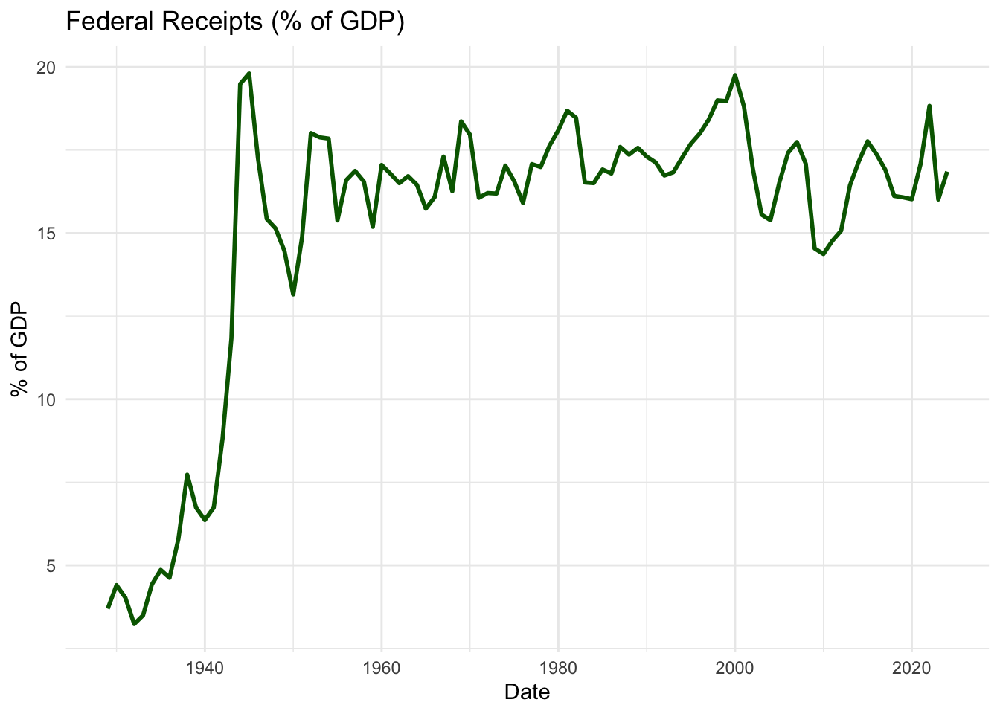
Total Federal Outlays (% GDP)
Code
# Federal Outlays as % of GDP
fed_outlays <- fredr(
series_id = "FYONGDA188S",
observation_start = as.Date("1929-01-01")
)
ggplot(fed_outlays, aes(x = date, y = value)) +
geom_line(color = "purple", size = 1) +
labs(title = "Federal Outlays (% of GDP)",
y = "% of GDP", x = "Date") +
theme_minimal()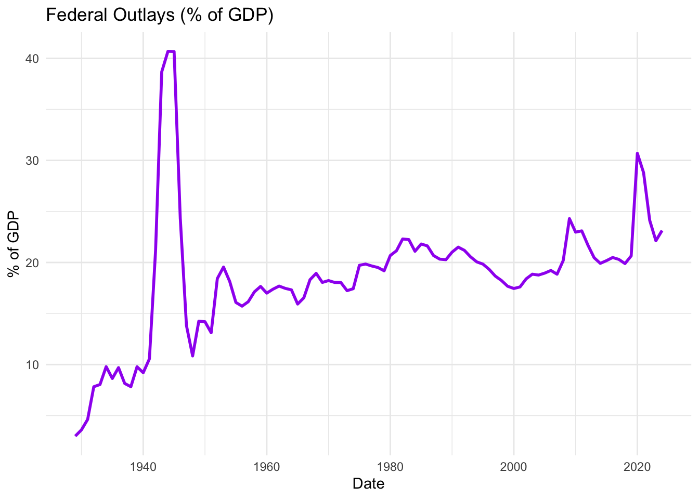